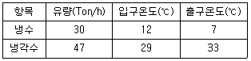
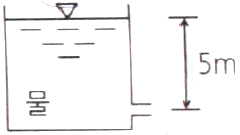
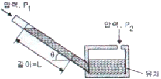
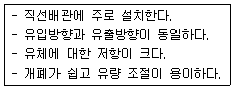

에너지관리산업기사 (2016-05-08 기출문제)
1과목: 열역학 및 연소관리
1. 가로, 세로, 높이가 각각 3m, 4m, 5m인 직육면체 상자에 들어있는 이상기체의 질량이 80kg일 때, 상자 안의 기체의 압력이 100kPa이면 온도는? (단, 기체상수는 250J/kgㆍK이다.)
- 27℃
- 31℃
- 34℃
- 44℃
(정답률: 51%)

2. 랭킨 사이클의 효율을 올리기 위한 방법이 아닌 것은?
- 유입되는 증기의 온도를 높인다.
- 배출되는 증기의 온도를 높인다.
- 배출되는 증기의 압력을 낮춘다.
- 유입되는 증기의 압력을 높인다.
(정답률: 77%)
3. 프로판(C3HS) 20 vol%, 부탄(C4H10) 80 vol%의 혼합가스 1L를 완전 연소하는 데 50%의 과잉 공기를 사용하였다면 실제 공급된 공기량은? (단, 공기 중 산소는 21vol%로 가정한다.)
- 27L
- 34L
- 44L
- 51L
(정답률: 49%)
4. 압력이 300kPa인 공기가 가역단열 변화를 거쳐 체적이 처음 체적의 5배로 증가하는 경우의 최종 압력은? (단, 공기의 비열비는 1.4이다.)
- 23kPa
- 32kPa
- 143kPa
- 276kPa
(정답률: 43%)
5. 압력(유압)분무식 버너에 대한 설명으로 틀린 것은?
- 유지 및 보수가 간단하다.
- 고점도의 연료도 무화가 양호하다.
- 압력이 낮으면 무화가 불량하게 된다.
- 분출 유량은 유압의 평방근에 비례한다.
(정답률: 57%)
6. 저위발열량이 27000kJ/kg인 연료를 시간당 20kg씩 연소시킬 때 발생하는 열을 전부 활용할 수 있는 열기관의 동력은?
- 150kW
- 900kW
- 9000kW
- 540000kW
(정답률: 49%)
7. 보일러의 부속장치 중 안전장치가 아닌 것은?
- 화염검출기
- 가용전
- 증기압력제한기
- 증기 축열기
(정답률: 84%)
8. 대기압이 750mmHg 일 때, 탱크의 압력계가 9.5kg/cm2를 지시한다면 이 탱크의 절대압력은?
- 7.26kg/cm2
- 10.52kg/cm2
- 14.27kg/cm2
- 18.45kg/cm2
(정답률: 70%)
9. 다음 열기관 사이클 중 기상 이상적인 사이클은?
- 랭킹사이클
- 재열사이클
- 재생사이클
- 카르노사이클
(정답률: 86%)
10. 프로판(C3H8), 5Nm3을 이론 산소량으로 완전 연소시켰을 때 건연소 가스량은?
- 10Nm3
- 15Nm3
- 20Nm3
- 25Nm3
(정답률: 56%)
11. 기체의 Cp(정압비열)와 Cv(정적비열)의 관계식으로 옳은 것은?
- Cp=Cvj
- Cp≦Cv
- Cp<Cv
- Cp>Cv
(정답률: 81%)
12. 다음 중 연료품질평가 시 세탄가를 사용하는 연료는?
- 중유
- 등유
- 경유
- 가솔린
(정답률: 74%)
13. 100℃ 건포화증기 2kg이 온도 30℃인 주위로 열을 방출하여 100℃ 포화액으로 변했다. 증기의 엔트로피 변화는? (단, 100℃에서의 증발잠열은 2257kJ/kg이다.)
- -14.9kJ/K
- -12.1kJ/K
- -11.3kJ/K
- -10.2kJ/K
(정답률: 61%)
14. 보일러 송풍기의 형식 중 원심식 송풍기가 아닌 것은?
- 다익형
- 리버스형
- 프로펠러형
- 터보형
(정답률: 72%)
15. 보일러의 수면이 위험수위보다 낮아지면 신호를 발신하여 버너를 정지시켜주는 장치는?
- 노내압 조절장치
- 저수위 차단장치
- 압력 조절장치
- 증기트랩
(정답률: 91%)
16. 500L의 탱크에 압력 1atm, 온도 0℃인 산소가 채워져 있다. 이 산소를 100℃까지 가열하고자 할 때 소요열량은? (단, 산소의 정적비열은 0.65kJ/kgㆍK이며, 가스상수는 26.5kgㆍm/kgㆍK이다.)
- 20.8kJ
- 46.4kJ
- 68.2kJ
- 100.6kJ
(정답률: 50%)
17. 가역 및 비가역 과정에 대한 설명으로 틀린 것은?
- 가역과정은 실제로 얻어질 수 없으나 거의 근접할 수 있다.
- 비가역과정의 인자로는 마찰, 점성력, 열전달 등이 있다.
- 가역과정은 이상적인 과정으로 최대의 열효율을 갖는 과정이다.
- 가역과정은 고열원, 저열원 사이의 온도차와 작동 물질에 따라 열효율이 달라진다.
(정답률: 56%)
18. “일과 열은 서로 변환될 수 있다”는 것과 가장 관계가 깊은 법칙은?
- 열역학 제 1법칙
- 열역학 제 2법칙
- 줄(Joule)의 법칙
- 푸리에(Fourier)의 법칙
(정답률: 81%)
19. 어떤 냉동기의 냉각수, 냉수의 온도 및 유량을 측정하였더니 다음 표와 같이 나타났다. 이 냉동기의 성능계수(COP)는?

- 3.65
- 3.95
- 4.25
- 4.55
(정답률: 56%)
20. 다음 연료 중 단위중량당 고위발열량이 가장 큰 것은?
- 탄소
- 황
- 수소
- 일산화탄소
(정답률: 75%)
2과목: 계측 및 에너지진단
21. 물이 들어있는 저장탱크의 수면에서 5m 깊이에 노즐이 있다. 이 노즐의 속도계수(Cv)가 0.95일 때, 실제 유속(m/s)은?

- 9.4
- 11.3
- 14.5
- 17.7
(정답률: 57%)
22. 0℃에서 수은주의 높이가 760mm에 상당하는 압력을 1표준기압 또는 대기압이라 할 때 다음 중 1atm과 다른 것은?
- 1013mbar
- 101.3Pa
- 1.033kg/cm2
- 10.332mH2O
(정답률: 70%)
23. 다음 중 유체의 흐름 중에 프로펠러 등의 회전자를 설치하여 이것의 회전수로 유량을 측정하는 유량계의 종류는?
- 유속식
- 전자식
- 용적식
- 피토관식
(정답률: 76%)
24. 열전대 온도계에서 냉접점(기준접점)이란?
- 측온 개소에 두는 + 측의 열전대 선단
- 기준온도(통상 0℃)로 유지되는 열전대 선단
- 측온 접점에 보상도선이 접속되는 위치
- 피측정 물체와 접촉하는 열전대의 접점
(정답률: 72%)
25. 다음 중 오르사트(orsat) 가스분석기에서 분석하는 가스가 아닌 것은?
- CO2
- O2
- CO
- N2
(정답률: 76%)
26. 급수온도 15℃에서 압력 10kg/cm2, 온도 183.2℃의 증기를 2000kg/h 발생시키는 경우, 이 보일러의 상당증발량은? (단, 증기엔탈피는 715kcal/kg로 한다.)
- 2003kg/h
- 2473kg/h
- 2597kg/h
- 2950kg/h
(정답률: 54%)
27. 계측기기 측정법의 종류가 아닌것은?
- 적산법
- 영위법
- 치환법
- 보상법
(정답률: 64%)
28. 용적식 유량계의 특징에 관한 설명으로 틀린 것은?
- 고점도 유체의 유량 측정이 가능하다.
- 입구측에 여과를 설치해야 한다.
- 구조가 간단하며 적산용으로 부적합하다.
- 유체의 맥동에 대한 영향이 적다.
(정답률: 77%)
29. 2개의 제어계를 조합하여 1차 제어장치가 제어량을 측정하여 제어 명령을 하면 2차 제어장치가 이 명령을 바탕으로 제어량을 조절하는 제어방식은?
- 비율 제어
- on-ofgg 제어
- 프로그램 제어
- 캐스케이드 제어
(정답률: 88%)
30. 아래와 같은 경사압력계에서 P1-P2는 어떻게 표시되는가? (단, 유체의 밀도는 ρ, 중력가속도는 g로 표시된다.)

- P1-P2=ρgL
- P1-P2=-ρgL
- P1-P2=ρgLsinθ
- P1-P2=-ρgLsinθ
(정답률: 72%)
31. 다음 중 구조상 보상도선을 반드시 사용하여야 하는 온도계는?
- 열전대식온도계
- 광고온계
- 방사온도계
- 전기식온도계
(정답률: 75%)
32. 저항온도계의 일종으로 온도변화에 따라 저항치가 변화하는 반도체의 성질을 이용 온도계수가 크고 응답속도가 빠르며, 국부적인 온도측정이 가능한 온도계는?
- 열전대온도계
- 서미스터온도계
- 베크만온도계
- 바이메탈온도계
(정답률: 69%)
33. 액면계를 측정방법에 따라 분류할 때 간접법을 이용한 액면계가 아닌것은?
- 게이지 글라스 액면계
- 초음파식 액면계
- 방사선식 액면계
- 압력식 액면계
(정답률: 69%)
34. 압력 12kgf/cm2로 공급되는 어떤 수증기의 건도가 0.95이다. 이 수증기가 1kg 당 엔탈피는? (단, 압력 12kgf/cm2에서 포화수의 엔탈피는 189.8kcal/kg, 포화증기 엔탈피는 664.5kcal/kg이다.)
- 474.7kcal/kg
- 531.3kcal/kg
- 640.8kcal/kg
- 854.3kcal/kg
(정답률: 40%)
35. 오차에 대한 설명으로 틀린 것은?
- 계통오차는 발생원인을 알고 보정에 의해 측정값을 바르게 할 수 있다.
- 계측상태의 미소변화에 의한 것은 우연오차이다.
- 표준편차는 측정값에서 평균값을 더한 값의 제곱의 산술평균의 제곱근이다.
- 우연오차는 정확한 원인을 찾을 수 없어 완전한 제거가 불가능하다.
(정답률: 75%)
36. 전자 밸브를 이용하여 온도를 제어하려 할 때 전자 밸브에 온도 신호를 보내기 위해 필요한 장치는?
- 압력센서
- 플로트 스위치
- 스톱 밸브
- 서모스탯
(정답률: 80%)
37. 잔류편차(off-set)가 있는 제어는?
- P 제어
- I 제어
- PI제어
- PID 제어
(정답률: 83%)
38. 보일러의 상당증발량이란 1시간 동안의 실제 증발량을 몇 기압, 몇℃의 포화수를 같은 온도의 포화증기로 만드는 증기량으로 환산하여 표시한 것인가?
- 1기압, 0℃
- 1기압, 100℃
- 3기압, 85℃
- 10기압, 100℃
(정답률: 87%)
39. 보일러의 열손실에 해당되지 않는 것은?
- 굴뚝으로 배출되는 배기가스 열량의 손실
- 미보온에 의한 방열손실
- 연료 중의 수소나 수분에 의한 손실
- 연료의 불완전연소에 의한 손실
(정답률: 66%)
40. 보일러 드럼(drum)수위를 제어하기 위하여 활용되고 있는 수위제어 검출방식이 아닌 것은?
- 전극식
- 차압식
- 플로트식
- 공기식
(정답률: 67%)
3과목: 열설비구조 및 시공
41. 증기 어큐뮬레이터(accumulator)를 설치할 때의 장점이 아닌 것은?
- 증기의 과부족을 해소시킨다.
- 보일러의 연소량을 일정하게 할 수 있다.
- 부하 변동에 대한 보일러의 압력변화가 적다.
- 증기 속에 포함된 수분을 제거한다.
(정답률: 67%)
42. 입형보일러의 특징에 관한 설명으로 틀린 것은?
- 설치면적이 비교적 작은 곳에 유리하다.
- 전열면적을 크게 할 수 있으므로 열효율이 크다.
- 증기발생이 빠르고 설비비가 적게 든다.
- 보일러 통을 수직으로 세워 설치한 것이다.
(정답률: 73%)
43. 대형 보일러 설비 중 절탄기(economizer)란?
- 석탄을 연소시키는 장치
- 석탄을 분쇄하기 위한 장치
- 보일러급수를 예열하는 장치
- 연소가스로 공기를 예열하는 장치
(정답률: 74%)
44. 단열 벽돌을 요로에 사용하였을 때 나타나는 효과가 아닌 것은?
- 노내 온도가 균일해진다.
- 열전도도가 작아진다.
- 요로의 열용량이 커진다.
- 내화 벽돌을 배면에 사용하면 내화벽돌의 스폴링을 방지한다.
(정답률: 68%)
45. 아래에서 설명하는 밸브의 명칭은?

- 슬루스 밸브
- 글로브 밸브
- 플로트 밸브
- 버터플라이 밸브
(정답률: 79%)
46. 열확산계수에 대한 운동량확산계수의 비에 해당하는 무차원수는?
- 프란틀(Prandtl)수
- 레이놀즈(Reynolds)수
- 그라쇼프(Grashoff)수
- 누셀(Nusselt)수
(정답률: 59%)
47. 신ㆍ재생에너지 설비 중 지하수 및 지하의 열 등의 온도차를 변환시켜 에너지를 생산하는 설비는?
- 지열에너지 설비
- 해양에너지 설비
- 연료전지 설비
- 수력에너지 설비
(정답률: 89%)
48. 주철제 보일러의 특징에 관한 설명으로 틀린 것은?
- 내식성, 내열성이 좋다.
- 구조가 간단하고, 충격이나 열응력에 강하다.
- 내부 청소가 어렵다.
- 저압으로 운전되므로 파열 시 피해가 적다.
(정답률: 66%)
49. 강관의 두께를 나타내는 변호인 스케줄 번호를 나타내는 식은? (단, 허용응력:S, 사용최고압력:P)
- 10×S/P
- 10×P/S
- 10×P/√S
- 10×S/√P
(정답률: 79%)
50. KS규격에 일정 이상의 내화도를 가진 재료를 규정하는데 공업요로, 요업요로에 사용되는 내화물의 규정 기준은?
- SK19(1520℃)이상
- SK20(1530℃)이상
- SK26(1580℃)이상
- SK27(1610℃)이상
(정답률: 85%)
51. 증발량 3500kg/h인 보일러의 증기엔탈피가 640kcal/kg이며, 급수엔탈피는 20kcal/kg이다. 이 보일러의 상당증발량은?
- 4155kg/h
- 4026kg/h
- 3500kg/h
- 3085kg/h
(정답률: 67%)
52. 다음 중 대차(Kiln car)를 쓸 수 있는 가마는?
- 등요(Up hill kiln)
- 선가마(Shaft kiln)
- 회전요(Rotary kiln)
- 셔틀가마(Shuttle kiln)
(정답률: 81%)
53. 수관보일러의 특징으로 틀린 것은?
- 보일러 효율이 높다.
- 고압 대용량에 적합하다.
- 전열면적당 보유수량이 적어 가동 시간이 짧다.
- 구조가 간단하여 취급, 청소, 수리가 용이하다.
(정답률: 71%)
54. 전기전도도 및 열전도도가 비교적 크고, 내식성과 굴곡성이 풍부하여 전기단자, 압력계관, 급수관, 냉난방관에 사용되는 관은?
- 강관
- 동관
- 스테인리스 강관
- PVC 관
(정답률: 81%)
55. 증기 보일러에 압력계를 설치할 때 압력계와 보일러를 연결시키는 관은?
- 냉각관
- 통기관
- 사이폰관
- 오버플로우관
(정답률: 83%)
56. 동일 지름의 안전밸브를 설치할 경우 다음 중 분출량이 가장 많은 형식은?
- 저양정식
- 온양정식
- 전량식
- 고양정식
(정답률: 71%)
57. 두께 25.4mm인 노벽의 안쪽온도가 352.7K이고 바깥쪽 온도는 297.1K이며 이 노벽의 열전도도가 0.048W/mㆍK일 때, 손실되는 열량은?
- 75W/m2
- 80W/m2
- 98W/m2
- 1⑤W/m2
(정답률: 44%)
58. 배관재료에 대한 설명으로 틀린것은?
- 주철관은 용접이 용이하고 인장강도가 크기 때문에 고압용 배관에 사용된다.
- 탄소강 강관은 인장강도가 크고, 접합작업이 용이하여 일반배관, 고온고압의 증기 배관으로 사용된다.
- 동관은 내식성, 굴곡성이 우수하고 전기열의 양도체로서 열교환기용, 압력계용으로 사용된다.
- 알루미늄관은 열전도도가 좋으며, 가공이 용이하여 전기기기, 광학기기, 열교환기 등에 사용된다.
(정답률: 80%)
59. 안전밸브의 증기누설이나 작동불능의 원인으로 가장 거리가 먼 것은?
- 밸브 구경이 사용압력에 비해 클때
- 밸브 축이 이완될 때
- 스프링의 장력이 감소될 때
- 밸브 시트 사이에 이물질이 부착될 때
(정답률: 76%)
60. 배관용 탄소 강관 접합 방식이 아닌 것은?
- 나사접합
- 용접접합
- 플랜지접합
- 압축접합
(정답률: 87%)
4과목: 열설비취급 및 안전관리
61. 에너지이용 합리화법에 따라 보일러 사용자와 보험계약을 체결한 보험사업자가 15일 이내에 시ㆍ도지사에게 알려야 하는 경우가 아닌 것은?
- 보험계약담당자가 변경된 경우
- 보험계약에 따른 보증기간이 만료한 경우
- 보험계약이 해지된 경우
- 사용자에게 보험금을 지급한 경우
(정답률: 77%)
62. 보일러 스케일 발생의 방지대책과 가장 거리가 먼 것은?
- 보일러수에 약품을 넣어 스케일 성분이 고착되지 않게 한다.
- 물에 용해도가 큰 규산 및 유지분 등을 이용하여 세관 작업을 실시한다.
- 보일러수의 농축을 막기 위하여 분출을 적절히 실시한다.
- 급수 중의 염류 불순물을 될 수 있는 한 제거한다.
(정답률: 76%)
63. 사용 중인 보일러의 점화 전 준비 사항과 가장 거리가 먼 것은?
- 수면계의 수위를 확인한다.
- 압력계의 지시압력 감시 등 증기압력을 관리한다.
- 미연소가스의 배출을 위해 댐퍼를 완전히 열고 노와 연도 내를 충분히 통풍시킨다.
- 연료, 연소장치를 점검한다.
(정답률: 64%)
64. 에너지이용 합리화법에서 정한 효율관리기자재에 속하지 않는 것은?
- 전기냉장고
- 자동차
- 조명기기
- 텔레비전
(정답률: 81%)
65. 에너지이용 합리화법에서 효율관리기자재의 지정 등 산업통상자원부령으로 정하는 기자재에 대한 고시기준이 아닌 것은?
- 에너지의 목표소비효율
- 에너지의 목표사용량
- 에너지의 최저소비효율
- 에너지의 최저사용량
(정답률: 66%)
66. 보일러 사용 중 수시로 점검해야 할 사항으로만 구성된 것은?
- 압력계, 수면계
- 배기가스 성분, 댐퍼
- 안전밸브, 스톱밸브, 맨홀
- 연료의 성상, 급수의 수질
(정답률: 82%)
67. 에너지이용 합리화법에 따라 다음중 벌칙기준이 가장 무거운 것은?
- 해당 법에 따른 검사대상기기의 검사를 받지 아니한 자
- 해당 법에 따른 검사대상기기조종자를 선임하지 아니한 자
- 해당 법에 따른 에너지저장시설의 보유 또는 저장의무의 부과시 정당한 이유 없이 이를 거부하거나 이행하지 아니한 자
- 해당 법에 따른 효율관리기자재에 대한 에너지 사용량의 측정결과를 신고하지 아니한 자
(정답률: 84%)
68. 보일러 산세관 시 사용하는 부식 억제제의 구비조건으로 틀린 것은?
- 점식발생이 없을 것
- 부식 억제능력이 클 것
- 물에 대한 용해도가 작을 것
- 세관액의 온도농도에 대한 영향이 적을 것
(정답률: 85%)
69. 보일러설치검사 기준에 정한 압력 방출장치 및 안전밸브에 대한 설명으로 틀린 것은?
- 증기 보일러에는 2개 이상 안전밸브를 설치하여야 한다.
- 전열면적이 50m2이하의 증기보일러에서는 안전밸브를 1개 이상으로 한다.
- 관류보일러에서 보일러와 압력방출장치와의 사이에 체크밸브를 설치할 경우 압력방출 장치는 2개 이상으로 한다.
- 안전밸브는 쉽게 검사할 수 있는 장소에 밸브 축을 수평으로 하여 가능한 한 보일러 동체에 간접 부착한다.
(정답률: 79%)
70. 다음 중 보일러 급수에 함유된 성분 중 전열면 내면 점식의 주원인이 되는 것은?
- O2
- N2
- CaSOR
- NaSO4
(정답률: 79%)
71. 시공업자단체에 관하여 에너지이용 합리화법에 규정한 것을 제외하고 어느 법의 사단법인에 과한 규정을 준용하는가?
- 상법
- 행정법
- 민법
- 집단에너지사업법
(정답률: 77%)
72. 에너지이용 합리화법에 따라 에너지저장의무 부과대상자로 가장 거리가 먼 것은?
- 전기사업자
- 석탄가공업자
- 도시가스사업자
- 원자력사업자
(정답률: 81%)
73. 보일러 급수 중에 용해되어 있는 칼슘염, 규산염, 및 마그네슘이 농축되었을 때 보일러에 영향을 미치는 것으로 가장 적절한 것은?
- 슬러지 생성의 원인이 된다.
- 보일러의 효율을 향상시킨다.
- 가성취화와 부식의 원인이 된다.
- 스케일 생성과 국부적 과열의 원인이 된다.
(정답률: 60%)
74. 보일러 이상연소 중 불완전연소의 원인이 아닌 것은?
- 연소용 공기량이 부족할 경우
- 연소속도가 적정하지 않을 경우
- 버너로부터의 분무입자가 작을 경우
- 분무연료와 연소용 공기와의 혼합이 불량할 경우
(정답률: 81%)
75. 보일러의 성능을 향상시키기 위하여 지켜야 할 사항이 아닌 것은?
- 과잉공기를 가급적 많게 한다.
- 외부 공기의 누입을 방지한다.
- 증기나 온수의 누출을 방지한다.
- 전열면의 그을음 등을 주기적으로 제거한다.
(정답률: 87%)
76. 유류 보일러에서 연료유의 예열온도가 낮을 때 발생될 수 있는 현상이 아닌 것은?
- 화염이 편류된다.
- 무화가 불량하게 된다.
- 기름의 분해가 발생한다.
- 그을음이나 분진이 발생한다.
(정답률: 76%)
77. 보일러의 분출사고 시 긴급조치 사항을 틀린 것은?
- 보일러 부근에 있는 사람들을 우선 안전한 곳으로 긴급히 대피시켜야 한다.
- 연소를 정지시키고 압입통풍기를 정시킨다.
- 다른 보일러와 증기관이 연결되어 있는 경우에는 증기밸브를 닫고 증기관 연결을 끊는다.
- 급수를 정지하여 수위 저하를 막고 보일러의 수위유지에 노력한다.
(정답률: 70%)
78. 보일러 설치 시 옥내설치 방법에 대한 설명으로 틀린 것은?
- 소용량 보일러는 반격벽으로 구분된 장소에 설치할 수 있다.
- 보일러 동체 최상부로부터 보일러실의 천장까지의 거리에는 제한이 없다.
- 연료를 저장할 때는 보일러 외측으로부터 2m 이상 거리를 둔다.
- 보일러는 불연성물질의 격벽으로 구분된 장소에 설치하여야 한다.
(정답률: 86%)
79. 난방면적(바닥면적)이 45m2, 벽체면적(창문, 문포함)은 50m2, 외기 온도는 –5℃, 실내온도 23℃, 벽체의 열관류율이 5kcal/m2ㆍhㆍ℃일 때 방위계수가 1.1이라면 이 때의 난방부하는? (단, 천장면적은 바닥면적과 동일한 것으로 본다.)
- 7700kcal/h
- 19600kcal/h
- 21560kcal/h
- 23100kcal/h
(정답률: 51%)
80. 보일러 수면계의 가능시험의 시기가 아닌 것은?
- 수면계를 보수 교체했을 때
- 2개 수면계의 수위가 서로 다를 때
- 수면계 수위의 움직임이 민첩할 때
- 포밍이나 프라이밍 현상이 발생할 때
(정답률: 77%)
기체의 질량 = 기체의 부피 x 기체의 밀도
80kg = 60m³ x 기체의 밀도
기체의 밀도 = 80kg / 60m³ = 1.33kg/m³
이제 이 기체의 압력, 부피, 기체상수를 이용하여 온도를 구할 수 있다.
PV = nRT
n = m / M (n: 몰의 수, m: 질량, M: 분자량)
M = 28.97g/mol (공기의 분자량)
V = 60m³ = 60000L
P = 100kPa
R = 250J/kgㆍK
m = 80kg
n = m / M = 80kg / 28.97g/mol = 2764.5mol
T = (P x V) / (n x R) = (100kPa x 60000L) / (2764.5mol x 250J/kgㆍK) = 31.2K
위 식에서 구한 온도는 절대온도(K)이므로, 섭씨온도로 변환하여 최종 답인 "27℃"을 구할 수 있다.
T(℃) = T(K) - 273.15 = 31.2K - 273.15 = -241.95℃
-241.95℃에 절대온도와 섭씨온도 간의 변환식을 적용하면 최종 답인 "27℃"을 얻을 수 있다.